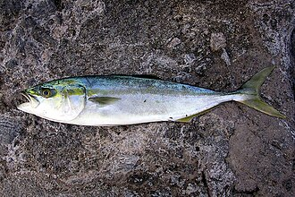

養殖ぶりの生産量 都道府県ランキング
全14都道府県の順位と収獲量
養殖ぶりの収獲量が全国で最も多いのは鹿児島県で、4万1,919 tです。全国（13万1,415 t）の32%を占めます。

| 順位 | 都道府県 | 収獲量 | 全国に占める割合 |
|---|---|---|---|
| 1位 | 鹿児島県 | 4万1,919 t | 32% |
| 2位 | 愛媛県 | 2万1,671 t | 16% |
| 3位 | 大分県 | 1万7,433 t | 13% |
| 4位 | 宮崎県 | 1万2,109 t | 9.2% |
| 5位 | 長崎県 | 1万531 t | 8.0% |
| 6位 | 香川県 | 5,344 t | 4.1% |
| 7位 | 熊本県 | 4,520 t | 3.4% |
| 8位 | 徳島県 | 4,322 t | 3.3% |
| 9位 | 三重県 | 3,149 t | 2.4% |
| 10位 | 佐賀県 | 1,038 t | 0.8% |
| 11位 | 静岡県 | 176 t | 0.1% |
| 12位 | 和歌山県 | 59 t | 0.0% |
| 13位 | 広島県 | 30 t | 0.0% |
| 14位 | 山口県 | 1 t | 0.0% |
養殖ぶりの生産量の推移（令和2年〜令和6年）
全国の収獲量は、令和2年の13万7,511 tから令和6年の13万1,415 tへ、4%減りました。期間中、1位は一貫して鹿児島県です。
| 年 | 全国 | 1位 | 2位 | 3位 |
|---|---|---|---|---|
| 令和6年 | 13万1,415 t | 鹿児島県4万1,919 t | 愛媛県2万1,671 t | 大分県1万7,433 t |
| 令和5年 | 12万3,502 t | 鹿児島県4万588 t | 愛媛県1万6,733 t | 大分県1万3,775 t |
| 令和4年 | 11万3,863 t | 鹿児島県3万7,260 t | 愛媛県1万7,091 t | 大分県1万6,521 t |
| 令和3年 | 13万3,691 t | 鹿児島県4万3,110 t | 愛媛県2万288 t | 大分県2万275 t |
| 令和2年 | 13万7,511 t | 鹿児島県4万3,113 t | 愛媛県2万706 t | 大分県2万4 t |
この数字について
- 分類：鯵の仲間
- 全国の収獲量：13万1,415 t
- この数字が表すもの：収獲量（養殖による収獲量）
- 調査：海面漁業生産統計調査（海面養殖業） 令和6年
- この品目は養殖の統計です。
- 14県分を調査（調査していない県は順位に入りません）
養殖ぶりの生産量について、よくある質問
- 養殖ぶりの生産量が日本一の都道府県はどこですか？
- 鹿児島県です。海面漁業生産統計調査（海面養殖業）（令和6年）で4万1,919 tでした。
- 養殖ぶりの生産量ランキング2位・3位はどこですか？
- 2位は愛媛県（2万1,671 t）、3位は大分県（1万7,433 t）です。
- 養殖ぶりの生産量ランキング4位・5位はどこですか？
- 4位は宮崎県（1万2,109 t）、5位は長崎県（1万531 t）です。養殖ぶりの全14県の順位は上の表のとおりです。
- 養殖ぶりの全国の生産量はどれくらいですか？
- 13万1,415 t（令和6年）です。